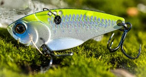

Topwater lures float. They mimic a mouse, snake, big insect, or frog skimming the top of the water and attract bass from the cover beneath the surface. The concave face of some topwater lures functions to push water ahead, making waves similar to those created by swimming bait. To use a topwater lure, you have to do a precise cast towards willows, cattails, overhanging brush, or lily pads. Often you'll get a bite the moment the lure hits the water, but jerking the popper a few feet, reeling up line, then jerking again lengthens the attraction on each cast. This type of lure is great for bass. Types of topwaters include poppers, walkers, wakebaits, minnows/twitch baits, buzzbaits, prop baits, and frogs.

Blade baits are sometimes called "lipless" crankbaits, but their design is more complex than that. They are produced with the tail of the lure being thinner than the head. The resulting vibrations entice fish and work especially well in fishing for striped, white, largemouth, and smallmouth bass. Most models are solid, causing them to quickly sink, but some come with extra shaking "BBs" or other metal inside. When the lure moves in the water, these pieces of metal vibrate, making sound that can entice fish. This is an easy lure to use because it only needs a constant rate of retrieval. You can pop or jerk the blade bait for additional action, but the retrieve is usually sufficient. They are painted to look like bluegill fry, minnows, or sunfish fry, which are popular bait fish.
Spinnerbait is unique from an inline spinner with the design and size of the blade. They can be a solid silver or gold color, but most have different colored bodies that give the impression of a bait fish's pattern when the blade is rotating. The blade of a spinnerbait typically spins wider, with more drag than an inline spinner, producing more sound and a harder retrieve. They are typically bigger than an inline spinner too, with some models in sizes four and greater weighing nearly an ounce. A spinnerbait can be used either in trolling or by casting from land. They are effective for several species of fish but work very well for all species of trout. You can get perch and walleye to bite on these too. Types of spinnerbaits include inline spinners and safety pins.

A fly is a hook, typically a smaller size ten or less, with feathers and other natural material attached to it that makes it look like larvae, an insect, or even floating egg sacks. This is one of the most popular lures in the world and the variety is almost endless in presentation, color, and design. A dry fly will float on the water similar to a roosting insect, whereas a wet fly floats right beneath the top, looking like the larvae of freshly hatched insects. Effective fly fishing needs the fly to look like the hatch of insects flying above the water, or their larvae floating right beneath the top of it. While trout are the primary species fly fishermen want to catch, bass, and other surface-feeding freshwater fish are just as enticed by a fly. There are even people who like to fish in saltwater who use bigger streamers on a fly rod to entice shallow water species. Types of flies include dry flies, nymphs, streamers, wet flies, salmon flies, and saltwater flies.